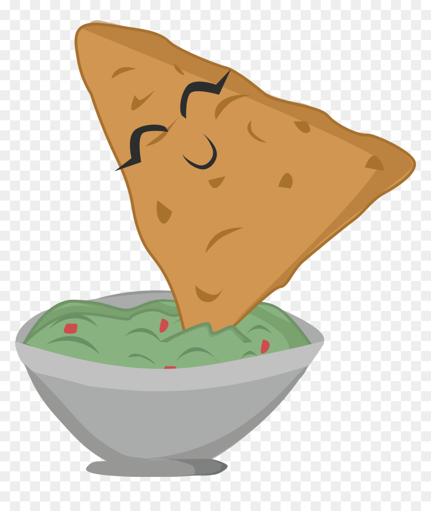

Guacamole

Citrus infused goodness
You will need the following:
2 Avocados
Half tablespoon of Lime juice
Half tablespoon of orange juice
Half tablespoon of pineapple juice
Chopped Cilantro
Mix the avocados, lime, pineapple and orange juice in a large bowl.
Mix in the cilantro.
Place an avocado pit into the bowl to keep the guac fresh.